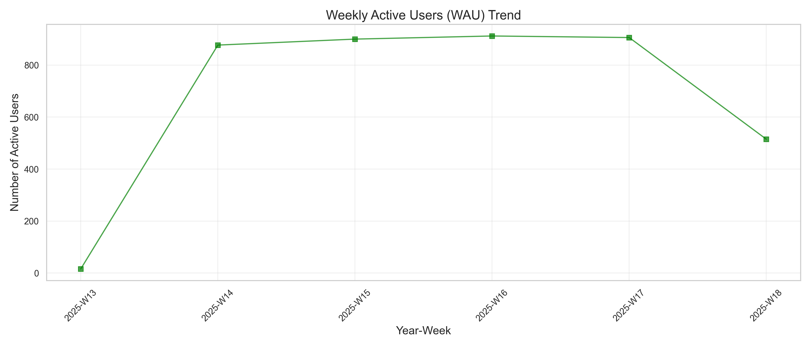

Movie Streaming Platform Analytics Dashboard
User Engagement


Content Performance
User Activity

Genre Trends by Country
Business Recommendations
- Focus content acquisition on genres with highest completion rates to increase user satisfaction
- Target retention campaigns for cohorts showing declining engagement after 3 months
- Optimize content delivery during peak viewing hours (7-10 PM) to ensure smooth streaming
- Create country-specific featured content sections based on regional genre preferences
- Develop engagement strategies for users in the 'Light' category to increase their activity
- Consider age-specific content recommendations based on watch time patterns by age group
- Launch weekend-specific promotions as weekend viewing activity is significantly higher
- Implement smart notifications for prime viewing hours to increase DAU/WAU ratio